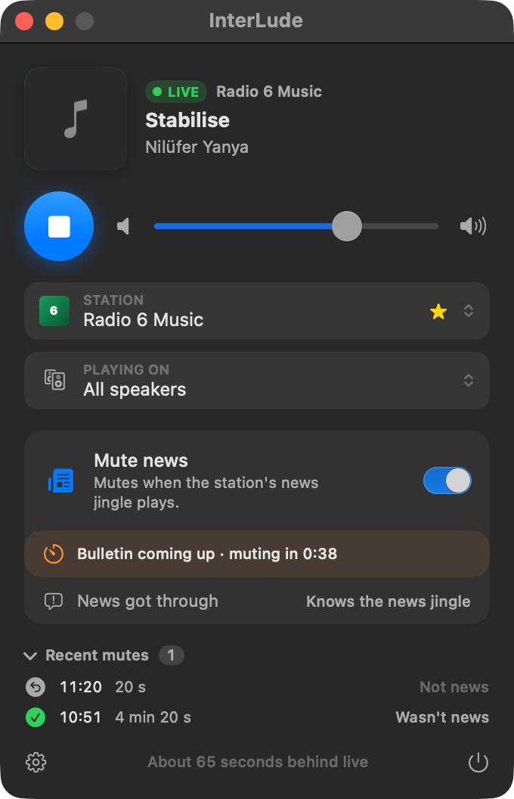
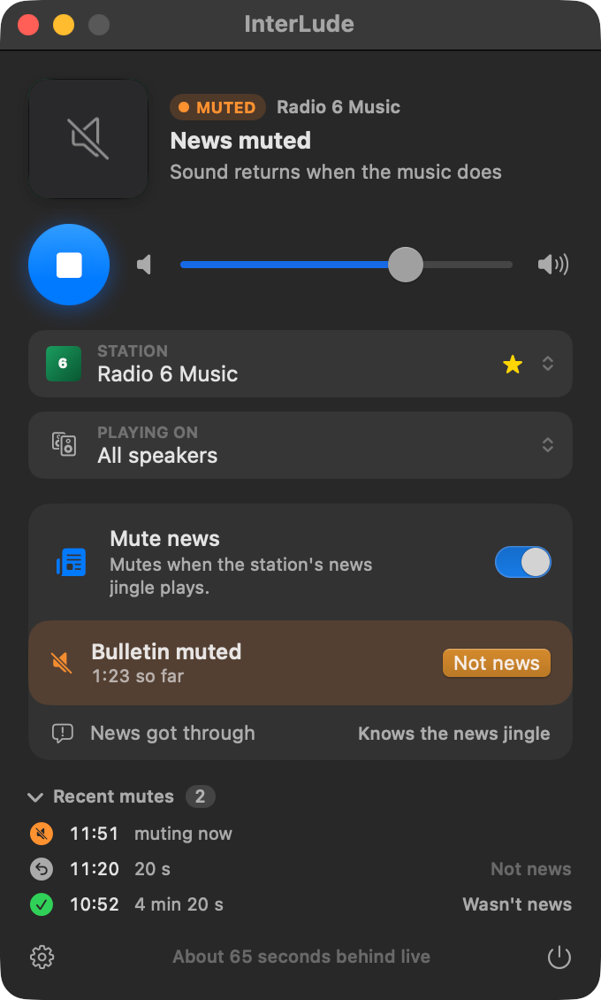
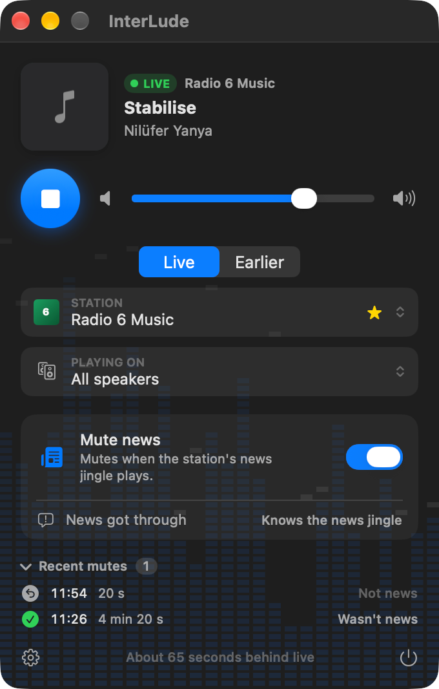
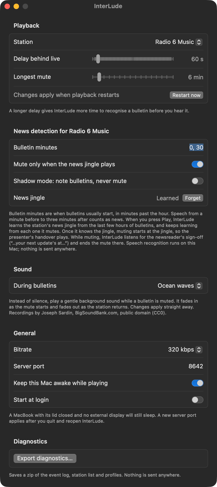
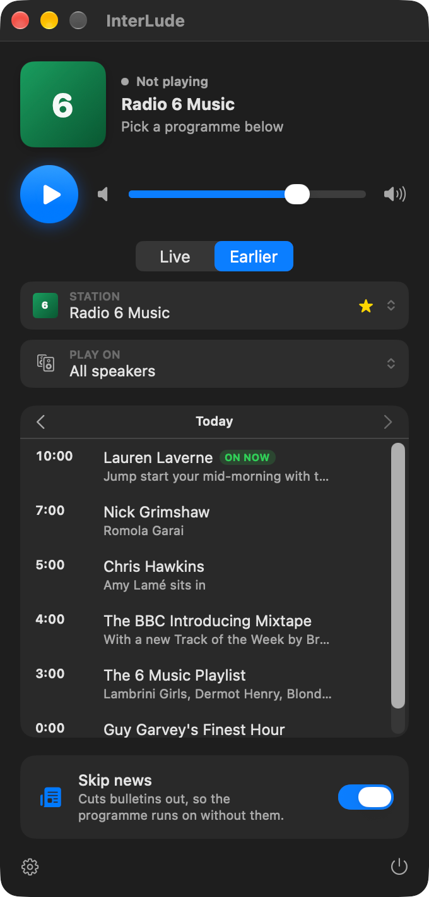
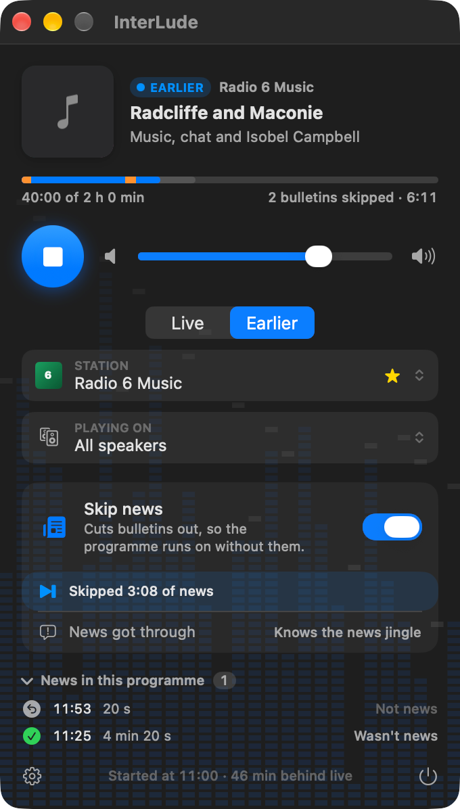
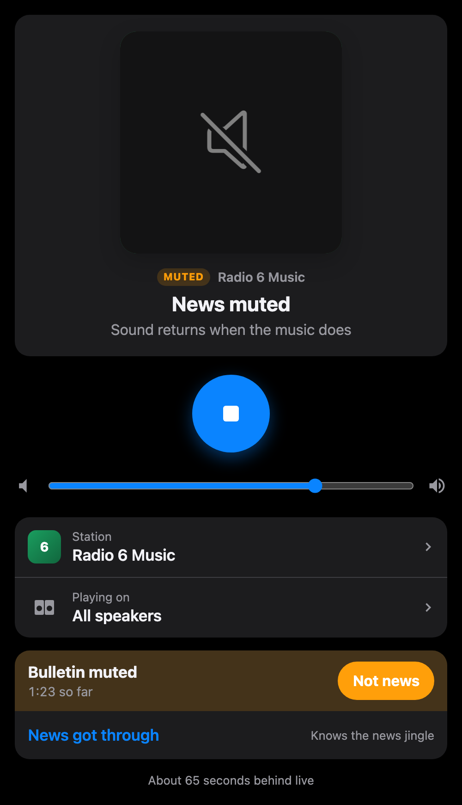
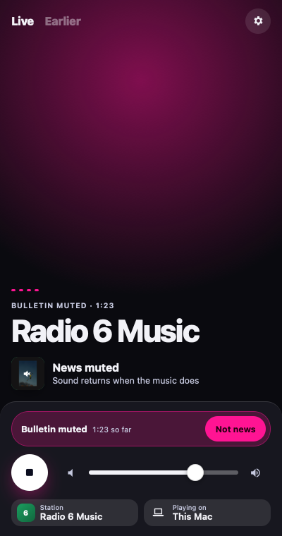
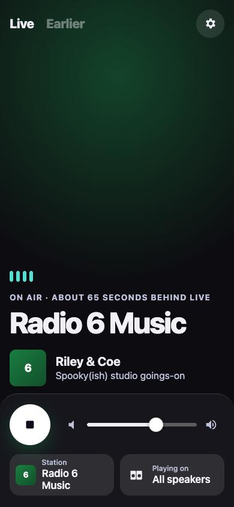
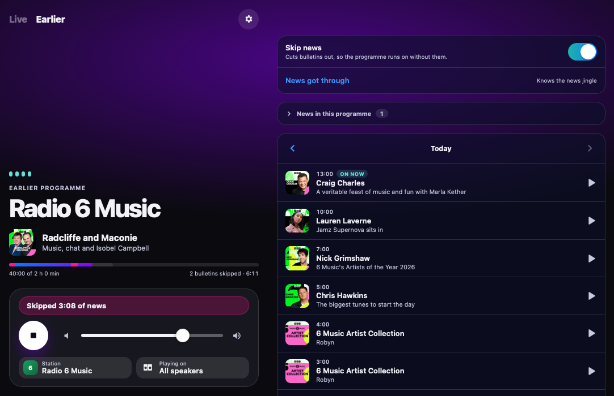

InterLude plays BBC radio to my speakers, about a minute behind live, and mutes the news bulletins on music stations. When the music comes back, so does the sound. It started in October 2026 as a small macOS menu bar app, and now also runs as a web app on a Linux server, with no Mac needed. It plays on a Mac, in a browser, or on Chromecast and Sonos speakers. It can also play back a programme from the last 30 days with the news cut out, and you can control it from your phone.
Why
I like 6 Music. What I don't need is a news bulletin every half hour, all day, every day. I'm not asking for the news to be abolished, just for it not to be the thing that interrupts flow of music.
I did ask nicely
In March 2025 I put a Freedom of Information request to the BBC with two questions. First, what is the schedule and frequency of news bulletins on 6 Music in a typical week? Second, is any metadata broadcast, over DAB or the internet streams, that tells a player a bulletin is imminent or under way? If there was a flag, a radio could simply act on it.
The reply (reference OOS2025/00474, 31 March 2025) didn't answer either question. The BBC's position was that anything it held on the subject would be held for the purposes of journalism, art or literature, which puts it outside the Act, so it hadn't searched at all. As a courtesy it did point me to the relevant condition in Ofcom's operating licence: at least 306 hours of news a year on 6 Music, with bulletins “regularly at frequent intervals throughout the day”. Which I knew, and is rather the problem.
So I took it as a personal challenge. If the BBC won't tell me when the news is on, I'll listen for it.
How it works
The trick is a short delay. InterLude fetches the station's audio stream a minute or so ahead of what I'm hearing and analyses it as it arrives. When it spots a bulletin starting, it swaps the audio for silence (or waves, a stream or birdsong, if you prefer) before I get to that point in the stream, and swaps it back when the music returns. The delay stays constant, so nothing glitches or skips.
Spotting a bulletin is harder than it sounds. A radio can't just ask whether something is news, so the app combines several clues:
- Apple's built-in sound classifier, which scores audio for speech and for music.
- The time. Bulletins sit around the hour and half hour, so sustained speech just after those marks is a strong hint.
- The news theme. The app learns the station's news jingle from the BBC's own six-hour rewind window, then listens for it.
- The sign-off. Apple's on-device speech recognition listens for the newsreader's closing words (“next update at…”) so the mute can end promptly, rather than waiting for music.
The rules are deterministic and every decision is logged, so when it gets something wrong I can see why. There's a “Not news” button for the times it does.
Seeing it run
InterLude lives in the menu bar and opens a small panel. Here it is going through one bulletin: a warning that a mute is on its way, the mute itself, and the settings behind it. (The album artwork is hidden in these pictures, since it belongs to the artists and the BBC.)







Earlier
The first version only worked on live radio. The second lets me go back. Switch the panel from Live to Earlier, pick a day and a programme from the last 30 days, and it plays from the start with the news bulletins cut out. They're cut, not muted: the programme carries straight on after the bulletin, so there's no gap of silence, and a note says how much news was skipped.




Programmes from the last eleven hours or so come from the BBC's live stream, which keeps more than it lists. Anything older comes from its BBC Sounds episode. Either way the whole programme is already there to be analysed, so InterLude works about ten minutes ahead of where I'm listening. That leaves time for an extra check: it transcribes the minutes around each hour and half hour and starts the cut where the newsreader begins, even if the presenter has talked straight into the news.
It isn't finished. You can't seek within a programme yet, and bulletins are cut on 6.4 second boundaries, so a few seconds either side can go with them.
Phone remote
Version 0.3.0 adds a remote for your phone. Turn it on in Settings, scan the QR code with the phone's camera and the remote opens in its browser, with nothing to install. It can play and stop, change the volume, station and speaker, and it shows whether a bulletin is muted, with the “Not news” and “News got through” buttons. On an iPhone you can add it to the home screen, so it opens full screen with the InterLude icon.

The remote's address carries a long random code, so other people on the network can't guess it, and Reset link makes a new one and stops the old one working. The phone has to be on the same Wi-Fi, or on the same tailnet if the Mac runs Tailscale, and the Mac awake with InterLude open. The remote now has Earlier too, so you can pick a programme from the last 30 days on the phone and play it from the start.
One interface, and no Mac needed
Since then the panel has been rebuilt as a web app. The Mac's menu bar panel, the phone remote and the server's page are now the same set of files, so they look and work alike everywhere. On a wide window, Earlier and the news sit beside the player.





It plays on Sonos speakers now, as well as Chromecasts. Sonos can't play the stream a Chromecast does, so InterLude gives it one continuous stream made from the same delayed, de-newsed audio. The speaker's own buttons and the Sonos app work alongside it: change the volume there and InterLude's slider follows, press pause and InterLude stops.
And it runs as a server. A Docker image for x86-64 Linux does everything the Mac app does, played and controlled from any browser and playing on Chromecast and Sonos speakers itself. In place of Apple's sound classifier and speech recognition it uses open models, YAMNet and whisper.cpp, running on the server's own CPU, with YAMNet's scores mapped onto Apple's so the same rules apply to both. Nothing is sent to a speech service.
What it does
- Runs as a macOS menu bar app, or as a web app on a Linux server with Docker.
- Plays any of 64 BBC stations on the Mac, in a browser, or on Chromecast and Sonos speakers and groups, and you can switch speaker while it plays.
- Plays a fixed time behind live: 60 seconds by default, adjustable per station.
- Mutes from the news theme to the newsreader's sign-off, so the presenter's handover and chat afterwards still play.
- Learns a station's news theme from the last few hours of broadcast the first time you play it.
- Has “Not news” and “News got through” buttons to correct it, and a log of every decision.
- Plays a programme from the last 30 days from its start with the bulletins cut out, on any of its speakers.
- Can be controlled from a phone: scan a QR code and it opens in the phone's browser.
- Shows what's playing and a countdown to the end of a mute.
- Can play ocean waves, a woodland stream or birdsong during a mute instead of silence, fading in and out.
- Sends no telemetry. Its only network traffic is to BBC servers and to my speakers.
How well does it work?
Honestly: well enough that I've stopped hearing the news, but I haven't measured it properly. I've confirmed the mute mechanics, with a captured stream silent for exactly the length of a bulletin and normal audio on both sides, and I've listened to it catch real bulletins. The first one to be caught correctly was on 12 October. It's had its mistakes as well: it muted a presenter talking over a song, and it has muted the presenter's chat after a bulletin because the presenter's voice and the newsreader's look alike to the classifier. Each of those turned into a fix. A proper accuracy test against a week of labelled listening is still on the list.
Try it
InterLude is free and open source (MIT licence). Everything is in the repository on GitHub: the Mac app, the Linux server, the instructions for installing either, and the full write-up of how it was worked out. It's still early, so expect rough edges.
- The Mac app needs an Apple silicon Mac running macOS 26 or later. It isn't notarised by Apple, so the first launch needs a one-off approval in System Settings. The steps are in the README, or you can build it from source.
- The server needs an x86-64 Linux machine with Docker and about 1 GB of memory free.
- If you use the phone remote and the Mac's firewall is on, macOS will ask once whether InterLude may accept incoming connections. Allow it for the remote to work.
- BBC streams and BBC Sounds episodes may not play outside the UK.
- Detection is tuned and tested on 6 Music. Other music stations should work but haven't been measured.
The small print
InterLude is unofficial and has no connection with the BBC. It relies on stream addresses that aren't documented and could change without warning, and the BBC could stop it working at any time. It's built with Swift, on the Mac and on the server alike.